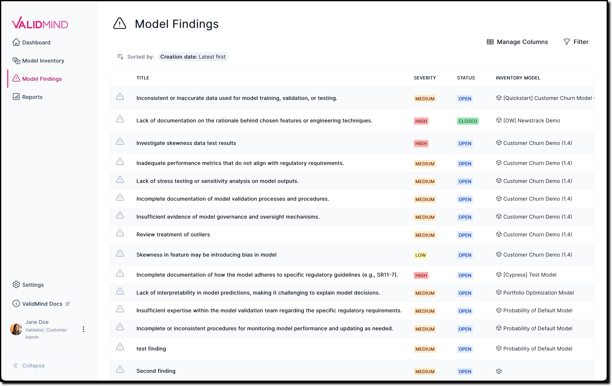
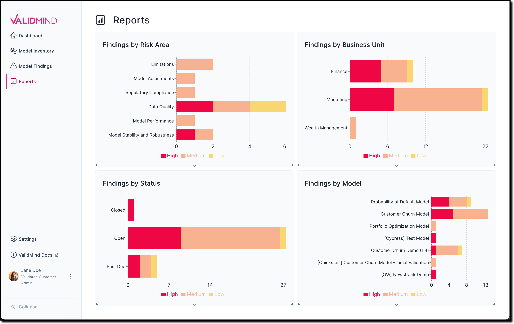
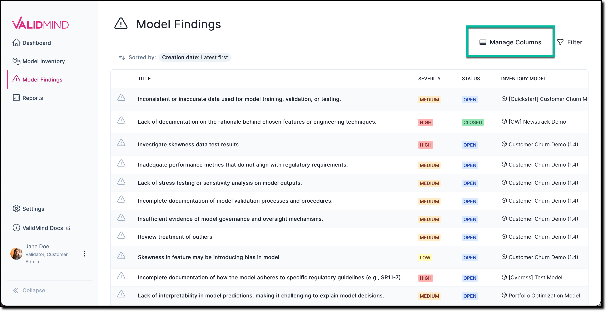
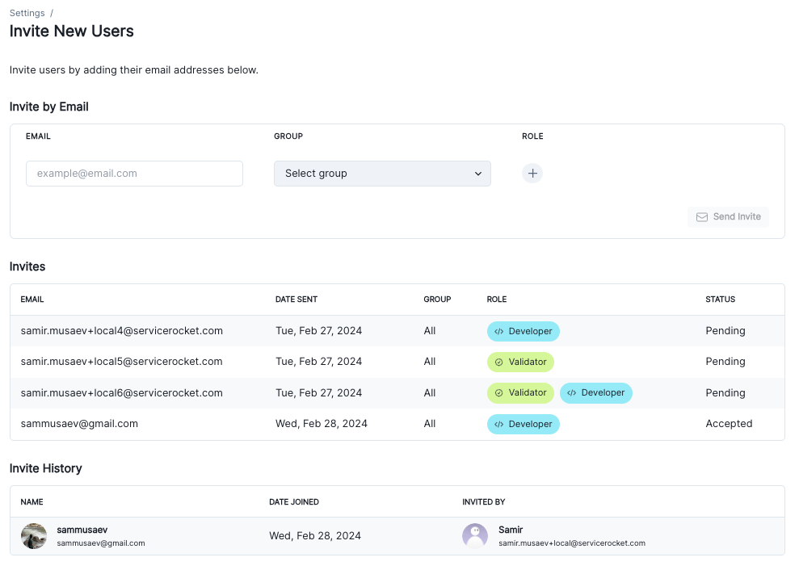

March 27, 2024
Release highlights
This extensive release brings many improvements ValidMind, from the display of new metric metadata for test results in the developer framework, to two new core features of platform UI: Model Findings and Reports pages, and many more!
ValidMind Developer Framework (v2.0.0)
View test results metadata
New metric metadata available in the ValidMind Platform UI makes it easy to see information about the test results that were generated with the ValidMind Developer Framework. Test results metadata includes:
- The history of values for test results in your model documentation
- User attribution to tell you who updated the test results
- Relevant inputs associated with the test results
Test results metadata is available directly in your model documentation:
ValidMind Platform UI (v1.18.4)
New Model Findings & Reports pages
We’re introducing two important new features to our platform: the Model Findings and Reports pages. The Reports page offers access to essential information about your model validation efforts, summarizing findings, while the Model Findings page facilitates efficient tracking of issues identified during model validation. Together, these pages improve your model validation workflow and simplify compliance with organizational standards and regulatory requirements.
| New Model Findings page | New Reports page |
|---|---|
|  |  |
The new Model Findings page allows you to efficiently track all findings flagged during model validation, such as major and minor issues, deficiencies, model limitations, or other concerns that must be addressed. To facilitate working with findings across all models undergoing validation in your organization, you can filter and view findings by specific criteria, including:
- Inventory model
- Severity
- Status
- Risk area
- Assignee
- Due date
The new Reports page provides quick insights into your model validation efforts to ensure effective oversight and management of model-related risks. Reports are grouped into bar charts for different types of findings, including:
- Findings by risk area
- Findings by business unit
- Findings by status
- Findings by model
Additionally, you can seamlessly navigate between the Reports page and relevant model findings by selecting information from the available bar charts to drill down into specific areas of concern.
Try it:
Model Inventory and Model Findings page customization
We enhanced both the Model Inventory and Model Findings pages to allow for the customization of table views. This feature enables you to customize these pages according to your own preferences, so that specific columns that are of interest are always shown. Columns can also be sorted by clicking on the column header.
On the Model Inventory page, you can show or hide table columns by clicking the Manage Columns button and toggling individual columns on or off:
The same customization is available on the Model Findings page:

Try it:
Custom fields for model registration
When registering new models in the model inventory, you can now designate custom fields as mandatory. Users must complete these custom fields before they can proceed with registering a model. This feature ensures that all necessary information is provided upfront, improving the completeness and accuracy of the model registration process.
You can specify the custom fields that are required under Settings > Custom Fields:
Try it: Custom Fields
User management improvements
We made a number of improvements to how you manage user groups:
- Added support for the creation of new groups
- Enabled the addition of members during group creation
- Added a section to show what models are visible to a group
- Included the assigned groups to user profile pages
These improvements enable you to manage collections of users at the organization or team level with similar roles or permissions more effectively.
You can create new user groups under Settings > Groups:
Try it: Groups
We also made improvements to how the invitation history gets displayed when you add new users to your organization:
- Added an Invite History table to show accepted invitations
- Renamed the existing table to Pending Invites and updated it to show only users that have not yet accepted
Combined, these changes make it easier to see both pending and accepted invitations for new users joining your organization:

Try it: Invite New Users
Enhancements
- Added SSO login option to auth flow
- In this release, we are introducing the option to log in to ValidMind using SSO. Single sign on (SSO) allows your enterprise organizations to have a centralized authentication mechanism, more integrated control over internal applications, and integration with existing identity management systems, such as Google Workspace, LDAP or Active Directory.
In order for this feature to be enabled for your organization, we can configure our Auth0 authentication provider to integrate with your organization’s identity provider. The steps required to make SSO available include:
- Creating an Auth0 Enterprise SAML connection to your organization’s identity provider
- Configuring your organizations identity provider and adding a new SSO application for ValidMind
- Enabling SSO on the ValidMind backend by associating the domain and the Auth0 SAML connection with your organization
- Removed documentation projects from the UI
- Documentation projects have been removed from the ValidMind Platform UI, streamlining navigation for accessing model documentation. You can now easily locate a model of interest and then access its documentation or validation report directly within the context of that model.
This change aims to improve navigation by providing you with a single entry point from the Model Inventory page. Previously, both the Model Inventory and the Documentation Projects pages offered similar navigation pathways which were redundant. All actions and information previously available for model documentation or validation reports continue to be available, now on the Document Overview page.
Bug fixes
- User permissions settings menu shown for users without the correct role
-
We fixed an issue where the user permissions settings menu was displayed even when a user did not possess the required
Customer adminrole. The menu is now hidden from view for these users.
- UI showing incorrect message to edit text
- Fixed an issue where users would see a message reading “Start editing by typing here …” even when they didn’t have permissions to edit documentation for the given model. This message is now no longer displayed.
- Use
input_idto track inputs being accessed -
Fixed a bug where input metadata was not tracked correctly because
input_idwas not being used to look up inputs. Input metadata is now tracked as expected.
Documentation updates
- Improved Guides section
- The main user guides section of our documentation site now features a new landing page that organizes common tasks by product area to assist with setting up ValidMind in a production environment. A redesigned left sidebar enhances navigation through content by product area or major feature, simplifying the search for relevant information based on your role or interest in specific product features.
- Improved model documentation and validation report sections
- The user guide sections for working with model documentation and preparing validation reports have been expanded with new landing pages, better procedural task steps, and more contextual information.
Learn more:
- Improved model documentation and validation report sections
- The user guide sections for model documentation and validation reports have been enhanced with new landing pages, improved procedural steps, and additional context. This update makes it easier to work with model documentation and prepare validation reports.
Learn more:
- New QuickStart for local developer environments
- A new QuickStart is available for first-time users that shows you how to run our introductory Jupyter notebook locally in your own developer environment.
We also removed the option to try out ValidMind in Docker. JupyterHub and Google Colab remain available as other QuickStart options to try, as before.
- Improved supported models page
- We improved our supported models documentation with additional information about supported model types, modeling libraries, and other tools.
- A new dedicated data privacy page
- A new data privacy policy page now aggregates all the information that explains how we protect your personal information in one convenient location.
- Removed roadmap commitments
- We updated the FAQ section to remove some stale references to roadmap items.
- Easier docs site previews
- We made it easier for contributors to preview and render the docs site locally, without having to first fetch some additional content from other repos first.
How to upgrade
To access the latest version of the ValidMind Platform UI, reload your browser tab.
To upgrade the ValidMind Developer Framework:
Using Jupyter Hub: reload your browser tab and re-run the
!pip install --upgrade validmindcell.In your own developer environment: restart your notebook and re-run:
%pip install validmind